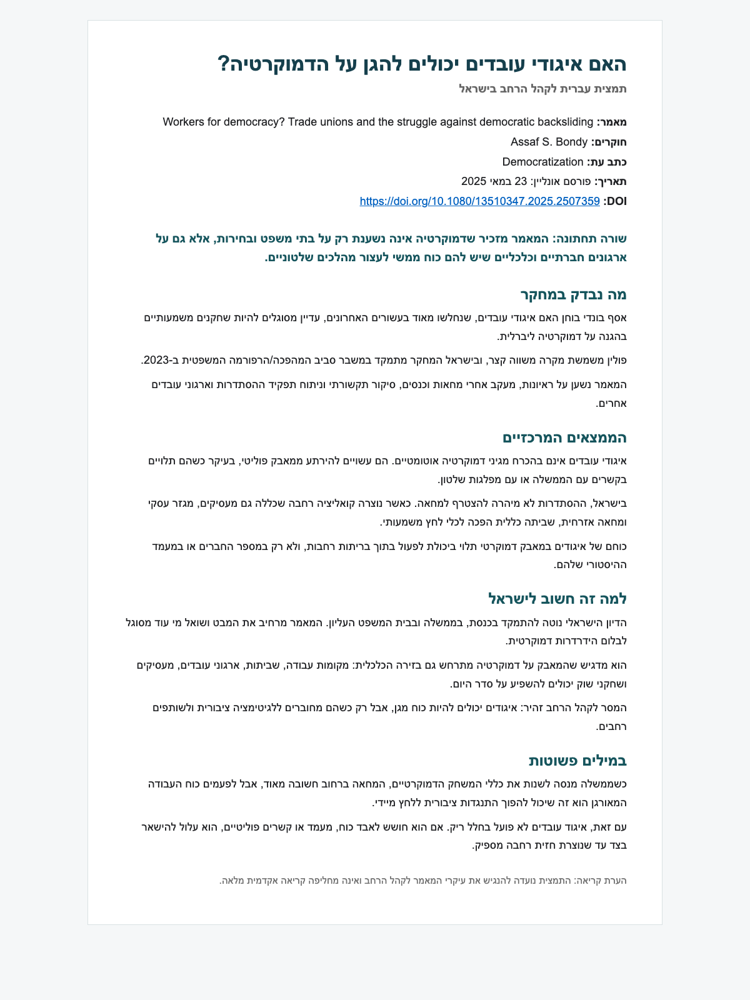
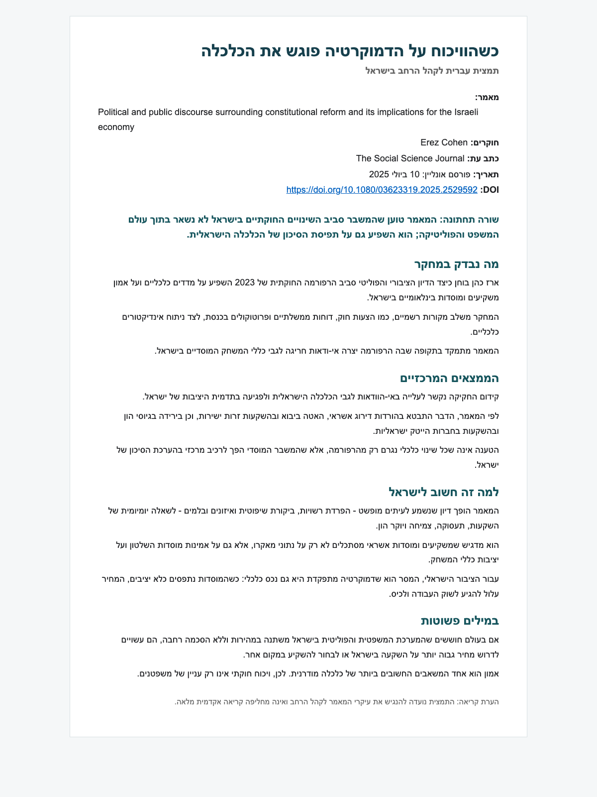
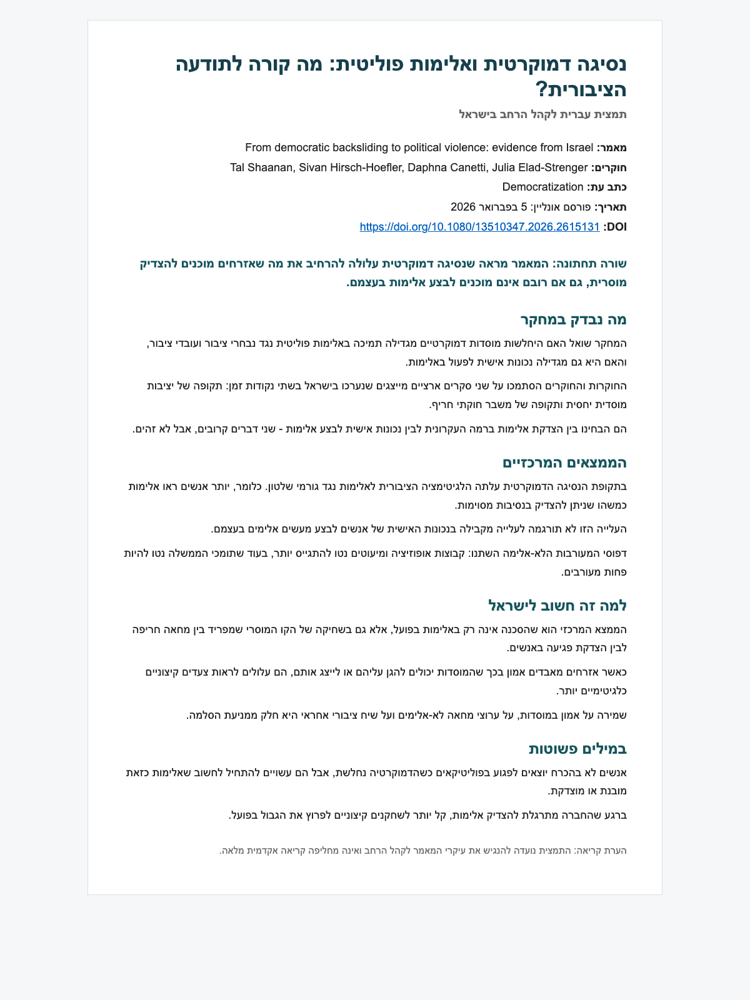

הנגשת מידע בנושאי דמוקרטיה
שלוש תמציות בעברית לקהל הרחב, המבוססות על מאמרים אקדמיים בינלאומיים של חוקרים ישראלים.

האם איגודי עובדים יכולים להגן על הדמוקרטיה?
איך כוח עבודה מאורגן יכול להשפיע על מאבקים נגד נסיגה דמוקרטית.
לקריאת העמוד
כשהוויכוח על הדמוקרטיה פוגש את הכלכלה
מה קורה לאמון משקיעים ולתפיסת סיכון בזמן משבר חוקתי.
לקריאת העמוד
נסיגה דמוקרטית ואלימות פוליטית: מה קורה לתודעה הציבורית?
איך שחיקה במוסדות דמוקרטיים משפיעה על הצדקת אלימות פוליטית.
לקריאת העמוד